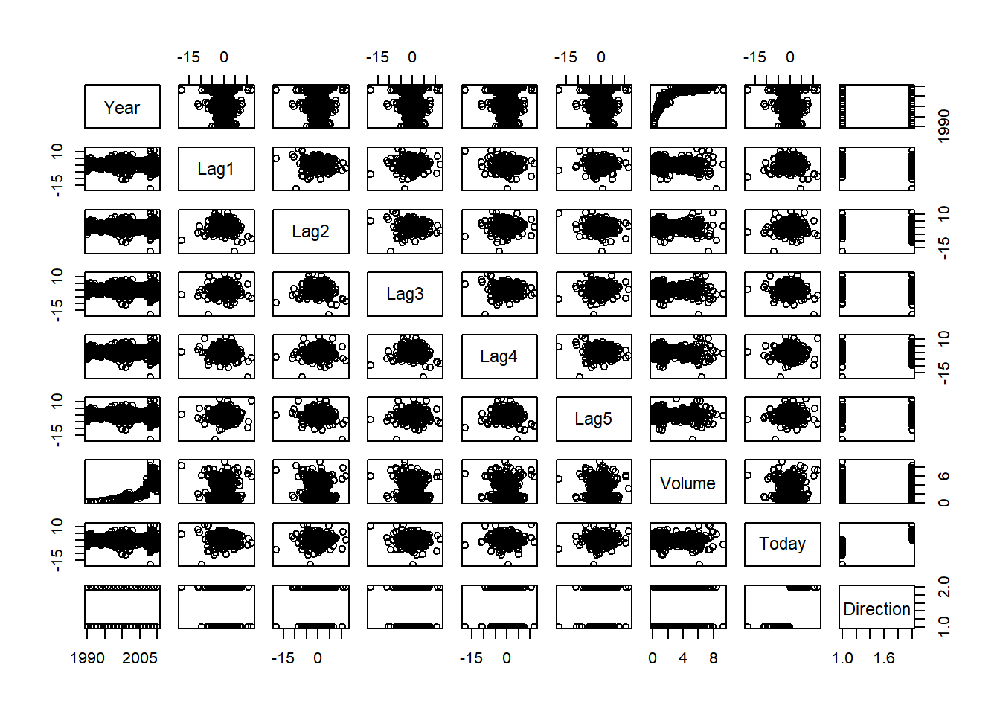

Punto 10
- Estas pregunta deben respoderse utilizando el conjunto de datos Weekly, que es parte del paquete ISLR. Estos datos son similares en naturaleza a datos de Smarket de este capítulo, excepto que contiene 1,089 Regresos semanales durante 21 años, desde principios de 1990 hasta el final del 2010.
(a) Produzaca algunos resumenes numéricos y gráficos de los datos Weekly.¿ parace que hay patrones?.
Resumen de variables:
library(ISLR)
data("Weekly")
summary(Weekly)## Year Lag1 Lag2 Lag3
## Min. :1990 Min. :-18.1950 Min. :-18.1950 Min. :-18.1950
## 1st Qu.:1995 1st Qu.: -1.1540 1st Qu.: -1.1540 1st Qu.: -1.1580
## Median :2000 Median : 0.2410 Median : 0.2410 Median : 0.2410
## Mean :2000 Mean : 0.1506 Mean : 0.1511 Mean : 0.1472
## 3rd Qu.:2005 3rd Qu.: 1.4050 3rd Qu.: 1.4090 3rd Qu.: 1.4090
## Max. :2010 Max. : 12.0260 Max. : 12.0260 Max. : 12.0260
## Lag4 Lag5 Volume
## Min. :-18.1950 Min. :-18.1950 Min. :0.08747
## 1st Qu.: -1.1580 1st Qu.: -1.1660 1st Qu.:0.33202
## Median : 0.2380 Median : 0.2340 Median :1.00268
## Mean : 0.1458 Mean : 0.1399 Mean :1.57462
## 3rd Qu.: 1.4090 3rd Qu.: 1.4050 3rd Qu.:2.05373
## Max. : 12.0260 Max. : 12.0260 Max. :9.32821
## Today Direction
## Min. :-18.1950 Down:484
## 1st Qu.: -1.1540 Up :605
## Median : 0.2410
## Mean : 0.1499
## 3rd Qu.: 1.4050
## Max. : 12.0260Matriz de gráfico de dispersión:
pairs(Weekly)
En la primera matriz muestra un resumen de las variables a trabajar, observamos que todas estan a una misma escala, ecepto la varible dirección que cuenta con dos niveles (Alto y bajo). En la segunda matriz las varibles lag1,lag2,lag3,lag4,lag5 y volumen, son variables que entre ellas aparentemente las observaciones se concentrar en el centro; podemos notar que las varible año y variable volume tiene un comportamiento de un polinomio de grado dos acsendente mientras pasa el tiempo.
Matriz de correlaciones
cor(Weekly[,-9])## Year Lag1 Lag2 Lag3 Lag4
## Year 1.00000000 -0.032289274 -0.03339001 -0.03000649 -0.031127923
## Lag1 -0.03228927 1.000000000 -0.07485305 0.05863568 -0.071273876
## Lag2 -0.03339001 -0.074853051 1.00000000 -0.07572091 0.058381535
## Lag3 -0.03000649 0.058635682 -0.07572091 1.00000000 -0.075395865
## Lag4 -0.03112792 -0.071273876 0.05838153 -0.07539587 1.000000000
## Lag5 -0.03051910 -0.008183096 -0.07249948 0.06065717 -0.075675027
## Volume 0.84194162 -0.064951313 -0.08551314 -0.06928771 -0.061074617
## Today -0.03245989 -0.075031842 0.05916672 -0.07124364 -0.007825873
## Lag5 Volume Today
## Year -0.030519101 0.84194162 -0.032459894
## Lag1 -0.008183096 -0.06495131 -0.075031842
## Lag2 -0.072499482 -0.08551314 0.059166717
## Lag3 0.060657175 -0.06928771 -0.071243639
## Lag4 -0.075675027 -0.06107462 -0.007825873
## Lag5 1.000000000 -0.05851741 0.011012698
## Volume -0.058517414 1.00000000 -0.033077783
## Today 0.011012698 -0.03307778 1.000000000(b) Utilice el conjunto de datos completo para realizar una regresion logística con Direction como la respuesta y la cinco varibles de retraso mas Volume como predictoras. Use la funcion summary para imprimir los resultados. ¿algunos de los predictores parece ser estadisticamente significativos? si es asi ¿cuales son estas variables?
Resumen Regresión logística
mod1 <- glm( Direction ~ Lag1+Lag2+Lag3+Lag4+Lag5+Volume,data = Weekly,family = "binomial")
summary(mod1)##
## Call:
## glm(formula = Direction ~ Lag1 + Lag2 + Lag3 + Lag4 + Lag5 +
## Volume, family = "binomial", data = Weekly)
##
## Deviance Residuals:
## Min 1Q Median 3Q Max
## -1.6949 -1.2565 0.9913 1.0849 1.4579
##
## Coefficients:
## Estimate Std. Error z value Pr(>|z|)
## (Intercept) 0.26686 0.08593 3.106 0.0019 **
## Lag1 -0.04127 0.02641 -1.563 0.1181
## Lag2 0.05844 0.02686 2.175 0.0296 *
## Lag3 -0.01606 0.02666 -0.602 0.5469
## Lag4 -0.02779 0.02646 -1.050 0.2937
## Lag5 -0.01447 0.02638 -0.549 0.5833
## Volume -0.02274 0.03690 -0.616 0.5377
## ---
## Signif. codes: 0 '***' 0.001 '**' 0.01 '*' 0.05 '.' 0.1 ' ' 1
##
## (Dispersion parameter for binomial family taken to be 1)
##
## Null deviance: 1496.2 on 1088 degrees of freedom
## Residual deviance: 1486.4 on 1082 degrees of freedom
## AIC: 1500.4
##
## Number of Fisher Scoring iterations: 4Podemos observar que la variable Lag2 con un P-valor de 0.0296 es estadisiticamente significativa con un nivel de confianza de 0.05.
(c) Compute la matrix de confusión y la fracción general de las predicciones correctas. Explica qué te dice la matriz de confusión logística.
Tabla de confusión
prediction <- mod1$fitted.values
pred<- rep("Dow",length(prediction))
pred[prediction > 0.5]<- "Up"
table(pred,Weekly$Direction)##
## pred Down Up
## Dow 54 48
## Up 430 557Con esta tabla de confusión y los datos de pruba, podemos concluir que el porcentaje de acierto en la prediccion es de \(\frac{54+557}{1089} = 0.5610 \times 100\) = 56.10% del tiempo . La tasa de error con los datos de entrenamiento es del 100%-56.10% = 43.8%. Tambien apreciamos que cuando el mercado sube, El modelo acierta \(\frac{557}{48+557}=0.92\times100%\)=92% de la veces, tambien cuando el mercado baja el modelo acierta un \(\frac{54}{54+430}=0.1115\times 100\) = 11.15% del tiempo.
(d) Ahora ajuste el modelo de regresión logística utilizando un período de datos de entrenamiento de 1990 a 2008, con Lag2 como el unico predictor. Calcule la matriz de confusión y la fracción general de las predicciones correctas para los datos retenidos (Es decir, los datos de 2009 y 2010)
Resumen Modelo con lag2.
train <- subset.data.frame(x = Weekly,subset = Year < 2009)
test2009_2010 <- subset.data.frame(Weekly,subset = Year >=2009)
mod2 <- glm(Direction ~ Lag2 ,data = train,family = binomial)
summary(mod2)##
## Call:
## glm(formula = Direction ~ Lag2, family = binomial, data = train)
##
## Deviance Residuals:
## Min 1Q Median 3Q Max
## -1.536 -1.264 1.021 1.091 1.368
##
## Coefficients:
## Estimate Std. Error z value Pr(>|z|)
## (Intercept) 0.20326 0.06428 3.162 0.00157 **
## Lag2 0.05810 0.02870 2.024 0.04298 *
## ---
## Signif. codes: 0 '***' 0.001 '**' 0.01 '*' 0.05 '.' 0.1 ' ' 1
##
## (Dispersion parameter for binomial family taken to be 1)
##
## Null deviance: 1354.7 on 984 degrees of freedom
## Residual deviance: 1350.5 on 983 degrees of freedom
## AIC: 1354.5
##
## Number of Fisher Scoring iterations: 4Tabla de confusión
prediction2 <- predict(object = mod2,newdata = test2009_2010,type = "response")
pred2<- rep("Dow",length(prediction2))
pred2[prediction2 > 0.5]<- "Up"
table(pred2,test2009_2010$Direction)##
## pred2 Down Up
## Dow 9 5
## Up 34 56Con esta tabla de confusión y los datos de pruba, podemos concluir que el porcentaje de acierto en la prediccion es de \(\frac{9+56}{104}=0.625\times 100\)= 62.5% del tiempo. La tasa de error con los datos de prueba es del 100%-62.5% = 37.5%. Tambien apreciamos que cuando el mercado sube, El modelo acierta \(\frac{56}{5+56}=0.9180\times100%\)=91.8% del tiempo, tambien cuando el mercado baja el modelo acierta un \(\frac{34}{34+9}=0.79\times 100\) = 79.6% del tiempo.
(e) Repita (d) usando LDA
Resumen modelo LDA:
library(MASS)
modlda <- lda(Direction~Lag2,data = train)
modlda## Call:
## lda(Direction ~ Lag2, data = train)
##
## Prior probabilities of groups:
## Down Up
## 0.4477157 0.5522843
##
## Group means:
## Lag2
## Down -0.03568254
## Up 0.26036581
##
## Coefficients of linear discriminants:
## LD1
## Lag2 0.4414162Tabla de confusión:
prediction_LDA <- predict(object = modlda,newdata = test2009_2010)
table(prediction_LDA$class,test2009_2010$Direction)##
## Down Up
## Down 9 5
## Up 34 56Con esta tabla de confusión y los datos de pruba, podemos concluir que el porcentaje de acierto en la prediccion es de \(\frac{9+56}{104}=0.625\times 100\)= 62.5% del tiempo. La tasa de error con los datos de prueba es del 100%-62.5% = 37.5%. Tambien apreciamos que cuando el mercado sube, El modelo acierta \(\frac{56}{5+56}=0.9180\times100%\)=91.8% de la veces, tambien cuando el mercado baja el modelo acierta un \(\frac{34}{34+9}=0.79\times 100\) = 79.6% del tiempo.
(f) Repita (d) usando QDA
Resumen modelo QDA
mod_QDA <- qda(Direction~Lag2,data = train)
mod_QDA## Call:
## qda(Direction ~ Lag2, data = train)
##
## Prior probabilities of groups:
## Down Up
## 0.4477157 0.5522843
##
## Group means:
## Lag2
## Down -0.03568254
## Up 0.26036581prediction_QDA <- predict(mod_QDA,newdata = test2009_2010)
table(prediction_QDA$class,test2009_2010$Direction)##
## Down Up
## Down 0 0
## Up 43 61Con esta tabla de confusión y los datos de pruba, podemos concluir que el porcentaje de acierto en la prediccion es de \(\frac{0+61}{104}=0.5865 \times 100\)= 58.65% del tiempo. La tasa de error con los datos de prueba es del 100%-58.65% = 41.35%. Tambien apreciamos que cuando el mercado sube, El modelo acierta \(\frac{61}{61}=1\) osea el 100% de la veces, Se resalta este modelo de anialisis de discriminación cudratica elige una dirección alta todo el tiempo.
(g) Repita (d) usando Knn con k=1.
Table de confusión:
library(class)
train.x <- as.matrix(train$Lag2)
test.x <- as.matrix(test2009_2010$Lag2)
train.Direction <- train$Direction
set.seed(1)
prediction_knn <- knn(train = train.x,test = test.x,cl = train.Direction,k = 1)
table(prediction_knn,test2009_2010$Direction)##
## prediction_knn Down Up
## Down 21 30
## Up 22 31Con esta tabla de confusión y los datos de pruba, podemos concluir que el porcentaje de acierto en la prediccion es de 62.5% del tiempo. La tasa de error con los datos de prueba es del 100%-56.10% = 43.9%. Tambien apreciamos que cuando el mercado sube, El modelo acierta 50.81% de la veces, tambien cuando el mercado baja el modelo acierta un 48.83% del tiempo.
(h) ¿ cuál de estos métodos parece proporcionar los mejores resultados con estos datos ?
Con los modelos anteriores, vemos que el modelo de regresión logístico y LDA, La tasa de error es mínima. tambien para los modelos QDA y KNN un poco menores.
(i) Experimente con diferentes combinaciones de predictores, incluyendo posibles transformaciones, para cada uno de los métodos, reporte la variables,método y la matriz de confusión asociada que parece proporcionar los mejores resultados en los mejores resultados en los datos retenidos.Tenga encuenta también debe experimentar con los valores para K en la clasificación con KNN.
La variable mas significativa es Lag2 como se mostro en los anteriores puntos para tener una interacción con las segunda varible significativa.
library(MASS)
library(class)
mod_inter_1 <- glm(Direction~Lag2:Lag1,family = binomial,data = train)
prediction_inter_1 <- predict(mod_inter_1,test2009_2010,type = "response")
pred_inter_1 <- rep("Dow",length(prediction_inter_1))
pred_inter_1[prediction_inter_1 > 0.5] <- "Up"
mod_lda_inter <-lda(Direction~Lag2:Lag1,data = train)
prediction_LDA_inter <- predict(mod_lda_inter,test2009_2010)
mod_QDA_inter <- qda(Direction ~ Lag2+sqrt(abs(Lag2)),train)
pred_QDA_inter <- predict(mod_QDA_inter,test2009_2010)
set.seed(0511)
#knn k=10
prediction_knn1 <- knn(train = train.x,test = test.x,cl = train.Direction,k = 10)
#knn=100
prediction_knn2 <- knn(train = train.x,test = test.x,cl = train.Direction,k = 100)Tablas de modelos realizados con interacciones
| Modelo | predicción correcta | tasa de presición cuando el mercado aumenta |
|---|---|---|
| regresión logistica con interacción | 57.69% | 98.36% |
| LDA con interacción | 57.69% | 98.36%% |
| QDA con \(\sqrt(abs(Lag2))\) | 57.69% | 78.68% |
| knn con K=10 | 57.69% | 68.85% |
| Knn con k=100 | 56.73% | 80.32% |
De esta tabla se puede concluir que el modelo de regresión logística y LDA tienen el mejor rendimiento en tasas de error de prueba.
Punto 11
- En este problema, desarrollará un modelo para predecir si un automóvil determinado obtiene un consumo de combustible alto o bajo en función del conjunto de datos automático.
(a) Cree una variable binaria, mpg01, que contenga un 1 si mpg contiene un valor por encima de su mediana, y un 0 si mpg contiene un valor por debajo de su mediana. Puede calcular la mediana utilizando la función median(). Tenga en cuenta que puede resultarle útil utilizar la función data.frame() para crear un único conjunto de datos que contenga tanto mpg01 como las otras variables automáticas.
library(ISLR)
n <- length(Auto$mpg)
mpg01 <- ifelse( Auto$mpg > median(Auto$mpg),1,0)
Auto <- data.frame(Auto,mpg01)knitr::kable(head(Auto),caption = "Cabeza de base de datos Auto con variable mpg01")| mpg | cylinders | displacement | horsepower | weight | acceleration | year | origin | name | mpg01 | mpg01.1 |
|---|---|---|---|---|---|---|---|---|---|---|
| 18 | 8 | 307 | 130 | 3504 | 12.0 | 70 | 1 | chevrolet chevelle malibu | 0 | 0 |
| 15 | 8 | 350 | 165 | 3693 | 11.5 | 70 | 1 | buick skylark 320 | 0 | 0 |
| 18 | 8 | 318 | 150 | 3436 | 11.0 | 70 | 1 | plymouth satellite | 0 | 0 |
| 16 | 8 | 304 | 150 | 3433 | 12.0 | 70 | 1 | amc rebel sst | 0 | 0 |
| 17 | 8 | 302 | 140 | 3449 | 10.5 | 70 | 1 | ford torino | 0 | 0 |
| 15 | 8 | 429 | 198 | 4341 | 10.0 | 70 | 1 | ford galaxie 500 | 0 | 0 |
(b) Explore los datos gráficamente para investigar la asociación entre mpg01 y las otras características. ¿Cuál de las otras características parece más útil para predecir mpg01? Los diagramas de dispersión y los diagramas de caja pueden ser herramientas útiles para responder a esta pregunta. Describe tus hallazgos.
Correlaciones entre variables:
cor(Auto[,-9])## mpg cylinders displacement horsepower weight
## mpg 1.0000000 -0.7776175 -0.8051269 -0.7784268 -0.8322442
## cylinders -0.7776175 1.0000000 0.9508233 0.8429834 0.8975273
## displacement -0.8051269 0.9508233 1.0000000 0.8972570 0.9329944
## horsepower -0.7784268 0.8429834 0.8972570 1.0000000 0.8645377
## weight -0.8322442 0.8975273 0.9329944 0.8645377 1.0000000
## acceleration 0.4233285 -0.5046834 -0.5438005 -0.6891955 -0.4168392
## year 0.5805410 -0.3456474 -0.3698552 -0.4163615 -0.3091199
## origin 0.5652088 -0.5689316 -0.6145351 -0.4551715 -0.5850054
## mpg01 0.8369392 -0.7591939 -0.7534766 -0.6670526 -0.7577566
## mpg01.1 0.8369392 -0.7591939 -0.7534766 -0.6670526 -0.7577566
## acceleration year origin mpg01 mpg01.1
## mpg 0.4233285 0.5805410 0.5652088 0.8369392 0.8369392
## cylinders -0.5046834 -0.3456474 -0.5689316 -0.7591939 -0.7591939
## displacement -0.5438005 -0.3698552 -0.6145351 -0.7534766 -0.7534766
## horsepower -0.6891955 -0.4163615 -0.4551715 -0.6670526 -0.6670526
## weight -0.4168392 -0.3091199 -0.5850054 -0.7577566 -0.7577566
## acceleration 1.0000000 0.2903161 0.2127458 0.3468215 0.3468215
## year 0.2903161 1.0000000 0.1815277 0.4299042 0.4299042
## origin 0.2127458 0.1815277 1.0000000 0.5136984 0.5136984
## mpg01 0.3468215 0.4299042 0.5136984 1.0000000 1.0000000
## mpg01.1 0.3468215 0.4299042 0.5136984 1.0000000 1.0000000Grafico de dispersion
pairs(Auto)
attach(Auto)## The following object is masked _by_ .GlobalEnv:
##
## mpg01## The following objects are masked from Auto (pos = 3):
##
## acceleration, cylinders, displacement, horsepower, mpg, mpg01,
## name, origin, weight, year## The following objects are masked from Auto (pos = 4):
##
## acceleration, cylinders, displacement, horsepower, mpg, mpg01,
## mpg01.1, name, origin, weight, year## The following objects are masked from Auto (pos = 5):
##
## acceleration, cylinders, displacement, horsepower, mpg, mpg01,
## mpg01.1, name, origin, weight, year## The following objects are masked from Auto (pos = 6):
##
## acceleration, cylinders, displacement, horsepower, mpg, mpg01,
## mpg01.1, name, origin, weight, year## The following objects are masked from Auto (pos = 7):
##
## acceleration, cylinders, displacement, horsepower, mpg, mpg01,
## mpg01.1, name, origin, weight, year## The following objects are masked from Auto (pos = 8):
##
## acceleration, cylinders, displacement, horsepower, mpg, mpg01,
## mpg01.1, name, origin, weight, year## The following objects are masked from Auto (pos = 9):
##
## acceleration, cylinders, displacement, horsepower, mpg, mpg01,
## mpg01.1, name, origin, weight, year## The following objects are masked from Auto (pos = 10):
##
## acceleration, cylinders, displacement, horsepower, mpg, mpg01,
## mpg01.1, name, origin, weight, year## The following objects are masked from Auto (pos = 11):
##
## acceleration, cylinders, displacement, horsepower, mpg, mpg01,
## mpg01.1, name, origin, weight, year## The following objects are masked from Auto (pos = 12):
##
## acceleration, cylinders, displacement, horsepower, mpg, mpg01,
## mpg01.1, name, origin, weight, year## The following objects are masked from Auto (pos = 13):
##
## acceleration, cylinders, displacement, horsepower, mpg, mpg01,
## mpg01.1, name, origin, weight, year## The following objects are masked from Auto (pos = 14):
##
## acceleration, cylinders, displacement, horsepower, mpg, mpg01,
## mpg01.1, name, origin, weight, year## The following objects are masked from Auto (pos = 15):
##
## acceleration, cylinders, displacement, horsepower, mpg, mpg01,
## mpg01.1, name, origin, weight, year## The following objects are masked from Auto (pos = 16):
##
## acceleration, cylinders, displacement, horsepower, mpg, mpg01,
## mpg01.1, name, origin, weight, year## The following objects are masked from Auto (pos = 17):
##
## acceleration, cylinders, displacement, horsepower, mpg, mpg01,
## mpg01.1, name, origin, weight, year## The following objects are masked from Auto (pos = 18):
##
## acceleration, cylinders, displacement, horsepower, mpg, mpg01,
## mpg01.1, name, origin, weight, year## The following objects are masked from Auto (pos = 19):
##
## acceleration, cylinders, displacement, horsepower, mpg, mpg01,
## mpg01.1, name, origin, weight, year## The following objects are masked from Auto (pos = 20):
##
## acceleration, cylinders, displacement, horsepower, mpg, mpg01,
## name, origin, weight, yearlayout(rbind(c(1,1,1,2,2,2,3,3,3),c(4,4,4,5,5,5,6,6,6)))
boxplot(cylinders~mpg01,data = Auto,main="Cilindros vs mpg01")
boxplot(displacement ~mpg01,data = Auto,main="Desplazamiento vs mpg01")
boxplot(horsepower ~mpg01,data = Auto,main="Caballos de fuerza vs mpg01")
boxplot(weight ~mpg01,data = Auto,main="Peso del vehiculo vs mpg01")
boxplot(acceleration ~mpg01,data = Auto,main="Aceleración vs mpg01")
boxplot(year ~mpg01,data = Auto,main="Modelo vs mpg01")(c) Divida los datos en un conjunto de entrenamiento y un conjunto de prueba.
(d) Realice LDA en los datos de entrenamiento para predecir mpg01 usando las variables que parecían más asociadas con mpg01 en (b). ¿Cuál es el error de prueba del modelo obtenido?
(e) Realice QDA en los datos de entrenamiento para predecir mpg01 usando las variables que parecían más asociadas con mpg01 en (b). ¿Cuál es el error de prueba del modelo obtenido?
(f) Realice una regresión logística en los datos de entrenamiento para predecir mpg01 usando las variables que parecían más asociadas con mpg01 en (b). ¿Cuál es el error de prueba del modelo obtenido?
(g) Realice KNN en los datos de entrenamiento, con varios valores de K, para predecir mpg01. Use solo las variables que parecían más asociadas con mpg01 en (b). ¿Qué errores de prueba obtienes? ¿Qué valor de K parece tener el mejor rendimiento en este conjunto de datos?
Punto 12
- Este problema implica escribir funciones.
(a) Escriba una función, Power(), que imprima el resultado de elevar 2 a la tercera potencia. En otras palabras, su función debe calcular \(2^3\) e imprimir los resultados.Sugerencia: recuerde que \(x^a\) eleva x a la potencia a. Use la función print() para generar el resultado.
(b) Cree una nueva función, Power2(), que le permita pasar dos números, x y a, e imprima el valor de \(x^a\). Puede hacer esto comenzando su función con la línea
Power2 = function (x,a){
Debería poder llamar a su función ingresando, por ejemplo,
Power2(3,8)
en la línea de comando. Esto debería generar el valor de \(3^8\), es decir, 6, 561.
(c) Usando la función Power2() que acaba de escribir, calcule \(10^3\), \(8^17\) y \(131^3\).
(d) Ahora cree una nueva función, Power3(), que realmente devuelve el resultado x^a como un objeto R, en lugar de simplemente imprimirlo en la pantalla. Es decir, si almacena el valor x^a en un objeto llamado resultado dentro de su función, simplemente puede return() este resultado, utilizando la siguiente línea:
return(result)
La línea de arriba debe ser la última línea en su función, antes del símbolo}.
(e) Ahora, utilizando la función Power3 (), cree un plot de f(x) = \(x^2\). El eje x debe mostrar un rango de enteros del 1 al 10, y el eje y debería mostrar \(x^2\). Rotule los ejes apropiadamente y use un título apropiado para la figura. Considere mostrar el eje x, el eje y o ambos en la escala logarítmica. Puede hacerlo utilizando log = ‘‘ x’’, log = ‘‘ y’’ o log = ‘‘ xy’’ como argumentos de la función plot()
(f) Cree una función, PlotPower (), que le permite crear una gráfica de x contra x ^ a para un a fijo y para un rango de valores de x. Por ejemplo, si llamas
plotPower(1:10,3)
entonces se debe crear un gráfico con un eje x que tome valores 333 1,2, …, 10 y un eje y que toma los valores \(1^3\),\(2^3\), …, \(10^3\).
Punto 13
Utilizando el conjunto de datos de Boston, ajuste los modelos de clasificación para predecir si un suburbio determinado tiene una tasa de criminalidad superior o inferior a la mediana. Explore los modelos de regresión logística, LDA y KNN utilizando varios subconjuntos de predictores. Describe tus hallazgos.